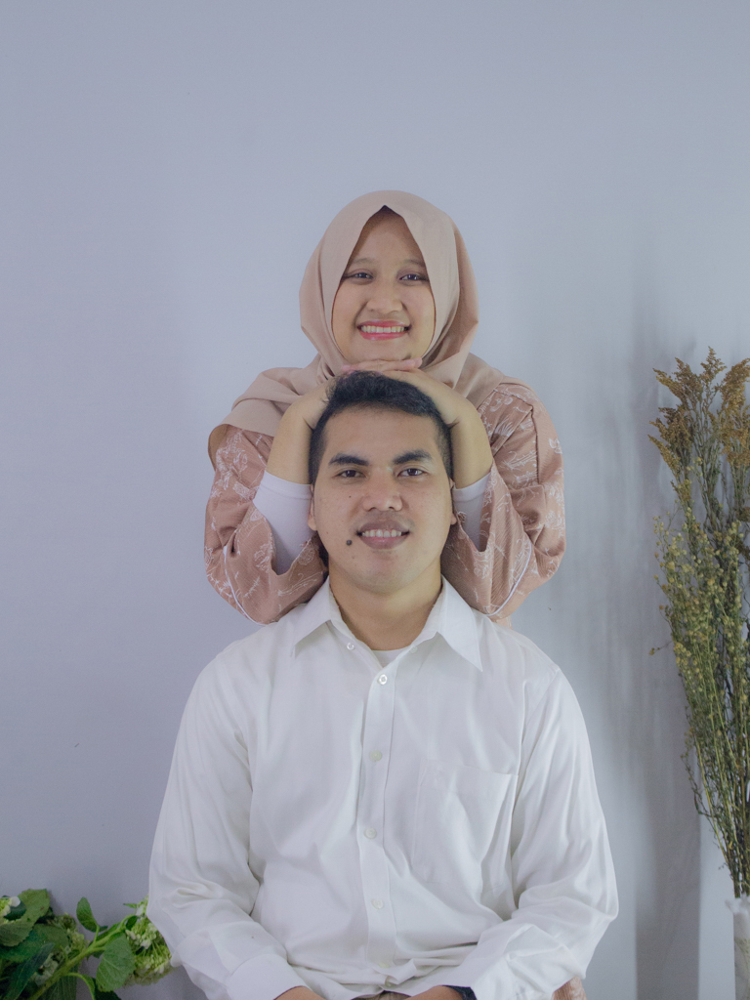

وَمِنْ اٰيٰتِهٖٓ اَنْ خَلَقَ لَكُمْ مِّنْ اَنْفُسِكُمْ اَزْوَاجًا لِّتَسْكُنُوْٓا اِلَيْهَا وَجَعَلَ بَيْنَكُمْ مَّوَدَّةً وَّرَحْمَةً ۗ اِنَّ فِيْ ذٰلِكَ لَاٰيٰتٍ لِّقَوْمٍ يَّتَفَكَّرُوْنَ
Dan di antara tanda-tanda (kebesaran)-Nya ialah Dia menciptakan pasangan-pasangan untukmu dari jenismu sendiri,
agar kamu cenderung dan merasa tenteram kepadanya, dan Dia menjadikan di antaramu rasa kasih dan sayang.
Sungguh, pada yang demikian itu benar-benar terdapat tanda-tanda (kebesaran Allah) bagi kaum yang berpikir.
agar kamu cenderung dan merasa tenteram kepadanya, dan Dia menjadikan di antaramu rasa kasih dan sayang.
Sungguh, pada yang demikian itu benar-benar terdapat tanda-tanda (kebesaran Allah) bagi kaum yang berpikir.
Q.S Ar-Rum(30) : 21
Kedua Mempelai
Mohammad Ryan NS
Ningsih Apriyani

Menghitung mundur acara akad nikah :
- Hari
- Jam
- Menit
- Detik